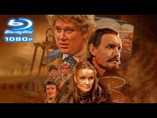
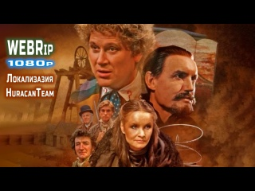
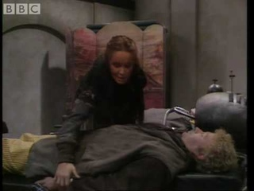

Субтитры: Русские и Английские |  |
|---|---|
с фанатской локализацией видеоряда (HuracanTeam) Субтитры: Русские и Английские |  |
The Mark of the Rani
Дата выхода: 2-9 февраля 1985
Формат: 2 эпизода по 45 мин.
|
ТАРДИС прибывает в Англию начала XIX века, в разгар промышленной революции. Доктор чувствует временную аномалию и вскоре обнаруживает, что здесь орудует Рани — его бывшая однокурсница с Галлифрея, гениальный и абсолютно бессердечный учёный. Она выкачивает из шахтёрского мозга химическое вещество, обеспечивающее сон, и использует его для своих экспериментов на планете Мияндия. А вдобавок к ней объявляется и Мастер — у него, как всегда, свои виды на происходящее, и Рани приходится с ним сотрудничать, хотя оба прекрасно понимают, что союз временный.
Дебют Рани в исполнении Кейт О'Мары — одной из немногих женщин-ренегатов Галлифрея. Снимали в настоящих шахтах и на железной дороге периода индустриальной революции, а в сюжете фигурирует Джордж Стефенсон — «отец железных дорог». Серия выгодно отличается от предыдущих тем, что здесь два злодея сразу, и их взаимные интриги интереснее, чем привычное противостояние Доктора с одним антагонистом.
 VHS - июль 1995 |  DVD - 4 сентября 2006 |  Blu-ray - 20 июня 2022 * Версия в нашей группе |
|---|

